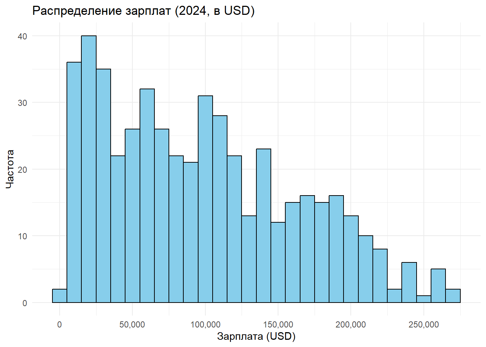
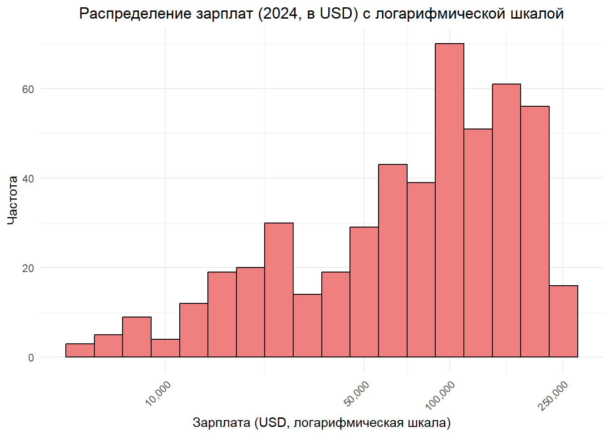
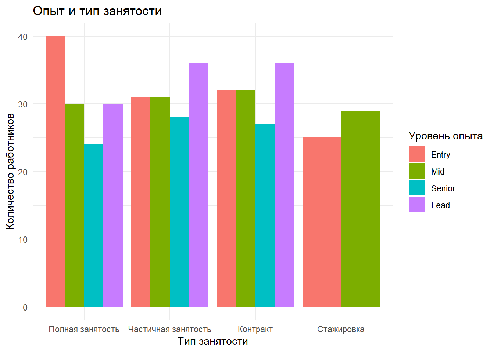

Code
knitr::opts_chunk$set(echo = TRUE, warning = FALSE, message = FALSE)
library(tidyverse)
library(dplyr)
library(ggplot2)
library(tidyr)
library(stringr)
library(forcats)
library(plotly)
library(countrycode)
library(readr)Анастасия Умыскова и София Сорокина
Этот отчет представляет анализ данных о зарплатах специалистов, работающих удаленно, на основе датасета “Work From Anywhere Salary Insight 2024”. Целью является изучение ключевых характеристик данных, вычисление статистик и визуализация результатов.
# A tibble: 10 × 14
Company `Job Title` Industry Location `Employment Type` `Experience Level`
<chr> <chr> <chr> <chr> <chr> <chr>
1 Microsoft Data Analy… Media Austin Part-time Mid
2 Apple Data Scien… Retail San Fra… Part-time Lead
3 Amazon Software E… Healthc… San Fra… Full-time Lead
4 Tesla Data Analy… Retail Austin Contract Mid
5 Adobe DevOps Eng… Healthc… New York Contract Senior
6 Tesla Product Ma… Media Chicago Part-time Senior
7 IBM DevOps Eng… Healthc… New York Internship Lead
8 Tesla Data Scien… Educati… Austin Part-time Mid
9 Tesla Data Scien… Tech Seattle Internship Lead
10 Salesforce Product Ma… Media Austin Full-time Senior
# ℹ 8 more variables: `Remote Flexibility` <chr>, `Salary (Annual)` <dbl>,
# Currency <chr>, `Years of Experience` <dbl>,
# `Job Satisfaction Score (1-10)` <dbl>, `Tech Stack` <chr>, Perks <chr>,
# `Last Promotion (Years Ago)` <dbl>spc_tbl_ [500 × 14] (S3: spec_tbl_df/tbl_df/tbl/data.frame)
$ Company : chr [1:500] "Microsoft" "Apple" "Amazon" "Tesla" ...
$ Job Title : chr [1:500] "Data Analyst" "Data Scientist" "Software Engineer" "Data Analyst" ...
$ Industry : chr [1:500] "Media" "Retail" "Healthcare" "Retail" ...
$ Location : chr [1:500] "Austin" "San Francisco" "San Francisco" "Austin" ...
$ Employment Type : chr [1:500] "Part-time" "Part-time" "Full-time" "Contract" ...
$ Experience Level : chr [1:500] "Mid" "Lead" "Lead" "Mid" ...
$ Remote Flexibility : chr [1:500] "Remote" "Remote" "Remote" "Onsite" ...
$ Salary (Annual) : num [1:500] 155200 106366 91026 41824 143930 ...
$ Currency : chr [1:500] "AUD" "INR" "INR" "EUR" ...
$ Years of Experience : num [1:500] 1.3 12.1 9.1 11.6 9.1 12.1 2.1 12.9 12.9 14.3 ...
$ Job Satisfaction Score (1-10): num [1:500] 7 1 1 2 3 7 9 3 1 5 ...
$ Tech Stack : chr [1:500] "Python, SQL" "JavaScript, React" "C#, .NET" "JavaScript, React" ...
$ Perks : chr [1:500] "Stock Options" "Gym Membership" "Gym Membership" "Stock Options" ...
$ Last Promotion (Years Ago) : num [1:500] 0.47 1.7 2.68 1.9 0.82 1.05 3.74 3.96 3.41 2.54 ...
- attr(*, "spec")=
.. cols(
.. Company = col_character(),
.. `Job Title` = col_character(),
.. Industry = col_character(),
.. Location = col_character(),
.. `Employment Type` = col_character(),
.. `Experience Level` = col_character(),
.. `Remote Flexibility` = col_character(),
.. `Salary (Annual)` = col_double(),
.. Currency = col_character(),
.. `Years of Experience` = col_double(),
.. `Job Satisfaction Score (1-10)` = col_double(),
.. `Tech Stack` = col_character(),
.. Perks = col_character(),
.. `Last Promotion (Years Ago)` = col_double()
.. )
- attr(*, "problems")=<externalptr> # A tibble: 14 × 2
Переменная `NA`
<chr> <int>
1 Company 0
2 Job Title 0
3 Industry 0
4 Location 0
5 Employment Type 0
6 Experience Level 0
7 Remote Flexibility 0
8 Salary (Annual) 0
9 Currency 0
10 Years of Experience 0
11 Job Satisfaction Score (1-10) 0
12 Tech Stack 0
13 Perks 0
14 Last Promotion (Years Ago) 0На основе анализа пропущенных значений в датасете можно сделать следующие выводы: - Все переменные в данных не содержат пропущенных значений (NA). - Для каждой переменной количество пропусков равно 0. Это говорит о том, что датасет полностью заполнен, и нет необходимости в дополнительной обработке пропущенных данных. Данные готовы к дальнейшему анализу и визуализации.
Уникальные валюты в данных: AUD, INR, EUR, USD, GBP На основе анализа уникальных валют в датасете можно сделать следующие выводы: - в столбце Currency присутствуют следующие уникальные валюты: AUD, INR, EUR, USD, GBP. Эти валюты соответствуют основным мировым валютам, которые часто используются в международных данных о зарплатах: австралийский доллар (AUD), индийская рупия (INR), евро (EUR), доллар США (USD) и британский фунт (GBP).
Названия столбцов в данных: Company, Job Title, Industry, Location, Employment Type, Experience Level, Remote Flexibility, Salary (Annual), Currency, Years of Experience, Job Satisfaction Score (1-10), Tech Stack, Perks, Last Promotion (Years Ago) Минимальное значение Salary (Annual): 30248.55 Максимальное значение Salary (Annual): 199927.2 Уникальные валюты в данных: AUD, INR, EUR, USD, GBP # Преобразование зарплат в USD
data_clean <- data %>%
mutate(Salary_USD = case_when(
Currency == "USD" ~ `Salary (Annual)`,
Currency == "EUR" ~ `Salary (Annual)` * 1.13,
Currency == "INR" ~ `Salary (Annual)` * 0.012,
Currency == "GBP" ~ `Salary (Annual)` * 1.35,
Currency == "AUD" ~ `Salary (Annual)` * 0.64
))
# Удаление строк, где Salary_USD равен 0
data_clean <- data_clean %>%
filter(Salary_USD > 0)
# Количество строк после фильтрации
cat("Количество строк в данных после фильтрации:", nrow(data_clean), "\n")Количество строк в данных после фильтрации: 500 # A tibble: 6 × 15
Company `Job Title` Industry Location `Employment Type` `Experience Level`
<chr> <chr> <chr> <chr> <chr> <chr>
1 Microsoft Data Analyst Media Austin Part-time Mid
2 Apple Data Scienti… Retail San Fra… Part-time Lead
3 Amazon Software Eng… Healthc… San Fra… Full-time Lead
4 Tesla Data Analyst Retail Austin Contract Mid
5 Adobe DevOps Engin… Healthc… New York Contract Senior
6 Tesla Product Mana… Media Chicago Part-time Senior
# ℹ 9 more variables: `Remote Flexibility` <chr>, `Salary (Annual)` <dbl>,
# Currency <chr>, `Years of Experience` <dbl>,
# `Job Satisfaction Score (1-10)` <dbl>, `Tech Stack` <chr>, Perks <chr>,
# `Last Promotion (Years Ago)` <dbl>, Salary_USD <dbl> Min. 1st Qu. Median Mean 3rd Qu. Max.
401.3 40852.0 91572.7 94043.1 143037.3 269901.8 Преобразование зарплат в единую валюту (доллары США, USD) было выполнено для обеспечения сопоставимости данных, так как исходный датасет содержит зарплаты, выраженные в разных валютах (AUD, INR, EUR, USD, GBP). Для этого были применены следующие коэффициенты конверсии:
# Статистики по зарплатам в USD
salary_stats <- data_clean %>%
summarise(
Средняя_зарплата_USD = mean(Salary_USD, na.rm = TRUE),
Медианная_зарплата_USD = median(Salary_USD, na.rm = TRUE),
Минимальная_зарплата_USD = min(Salary_USD, na.rm = TRUE),
Максимальная_зарплата_USD = max(Salary_USD, na.rm = TRUE)
)
# Вывод статистики в виде таблицы
salary_stats# A tibble: 1 × 4
Средняя_зарплата_USD Медианная_зарплата_USD Минимальная_зарплата_USD
<dbl> <dbl> <dbl>
1 94043. 91573. 401.
# ℹ 1 more variable: Максимальная_зарплата_USD <dbl>На основе рассчитанных статистик по зарплатам в USD можно сделать следующие выводы:
# A tibble: 10 × 15
Company `Job Title` Industry Location `Employment Type` `Experience Level`
<chr> <chr> <chr> <chr> <chr> <chr>
1 Apple Data Scientist Retail San Fra… Part-time Lead
2 Amazon Software Engi… Healthc… San Fra… Full-time Lead
3 IBM DevOps Engine… Healthc… New York Internship Lead
4 Google Data Analyst Media Chicago Full-time Mid
5 Adobe Software Engi… Educati… San Fra… Part-time Lead
6 Tesla DevOps Engine… Retail Austin Full-time Entry
7 Apple Product Manag… Educati… San Fra… Contract Senior
8 IBM DevOps Engine… Tech Boston Internship Lead
9 Apple UX Designer Retail Remote Internship Senior
10 Adobe UX Designer Tech San Fra… Contract Mid
# ℹ 9 more variables: `Remote Flexibility` <chr>, `Salary (Annual)` <dbl>,
# Currency <chr>, `Years of Experience` <dbl>,
# `Job Satisfaction Score (1-10)` <dbl>, `Tech Stack` <chr>, Perks <chr>,
# `Last Promotion (Years Ago)` <dbl>, Salary_USD <dbl>Количество записей с зарплатой менее 10,000 USD: 96 На основе фильтрации записей можно сделать следующие выводы:
# A tibble: 16 × 4
`Employment Type` `Experience Level` Count Avg_Salary
<chr> <chr> <int> <dbl>
1 Contract Entry 4 1281.
2 Contract Lead 7 1795.
3 Contract Mid 4 1642.
4 Contract Senior 4 1674.
5 Full-time Entry 5 1400.
6 Full-time Lead 9 1245.
7 Full-time Mid 9 1761.
8 Full-time Senior 7 1274.
9 Internship Entry 8 1516.
10 Internship Lead 7 1291.
11 Internship Mid 7 1332.
12 Internship Senior 6 1454.
13 Part-time Entry 3 1355.
14 Part-time Lead 9 1574.
15 Part-time Mid 4 1155.
16 Part-time Senior 3 569.На основе сводной таблицы по типу занятости и уровню опыта для записей с зарплатами менее 10,000 USD можно сделать следующие выводы: - Среди 83 записей с низкими зарплатами распределение по типам занятости и уровням опыта показывает, что низкие значения присутствуют во всех категориях: Full-Time (30 записей), Part-Time (19 записей) и Contract (8 записей). Уровни опыта варьируются от Entry до Lead, с примерами средних зарплат, таких как 1,760.93 USD (Full-Time, Mid) и 568.97 USD (Part-Time, Senior). - Даже для Full-Time и Contract ролей, которые обычно предполагают более высокие доходы, средние зарплаты остаются крайне низкими (например, 1,244.61 USD для Full-Time Lead), что не соответствует ожиданиям, особенно для локаций в США (Сан-Франциско, Чикаго и др.), где указаны эти записи. - Наличие низких зарплат для Senior и Lead ролей (например, 568.97 USD для Part-Time Senior) выглядит особенно аномально, так как такие специалисты обычно получают значительно больше, даже при неполной занятости. - Это подтверждает, что низкие значения, скорее всего, связаны с систематической ошибкой в данных, а не с реальными экономическими факторами, такими как тип занятости или уровень опыта. Возможно, проблема кроется в неправильной интерпретации исходных значений зарплат (например, месячные вместо годовых), что требует дальнейшей проверки.
# A tibble: 1 × 3
Currency Count Avg_Salary_USD
<chr> <int> <dbl>
1 INR 96 1434.library(dplyr)
# Пересчет зарплат: для INR умножаем на 12 (месячные в годовые) перед конверсией
data_clean <- data %>%
mutate(Salary_USD = case_when(
Currency == "USD" ~ `Salary (Annual)`, # Без изменений для USD
Currency == "EUR" ~ `Salary (Annual)` * 1.13, # Без изменений для EUR
Currency == "INR" ~ (`Salary (Annual)` * 12) * 0.012, # Месячные INR в годовые, затем в USD
Currency == "GBP" ~ `Salary (Annual)` * 1.35, # Без изменений для GBP
Currency == "AUD" ~ `Salary (Annual)` * 0.64 # Без изменений для AUD
)) %>%
# Удаление строк с зарплатой 0 или некорректными значениями
filter(Salary_USD > 0)
# Количество строк после фильтрации
cat("Количество строк в данных после фильтрации:", nrow(data_clean), "\n")Количество строк в данных после фильтрации: 500 # A tibble: 6 × 15
Company `Job Title` Industry Location `Employment Type` `Experience Level`
<chr> <chr> <chr> <chr> <chr> <chr>
1 Microsoft Data Analyst Media Austin Part-time Mid
2 Apple Data Scienti… Retail San Fra… Part-time Lead
3 Amazon Software Eng… Healthc… San Fra… Full-time Lead
4 Tesla Data Analyst Retail Austin Contract Mid
5 Adobe DevOps Engin… Healthc… New York Contract Senior
6 Tesla Product Mana… Media Chicago Part-time Senior
# ℹ 9 more variables: `Remote Flexibility` <chr>, `Salary (Annual)` <dbl>,
# Currency <chr>, `Years of Experience` <dbl>,
# `Job Satisfaction Score (1-10)` <dbl>, `Tech Stack` <chr>, Perks <chr>,
# `Last Promotion (Years Ago)` <dbl>, Salary_USD <dbl> Min. 1st Qu. Median Mean 3rd Qu. Max.
4815 40852 91573 97072 143037 269902 Количество записей с зарплатой менее 10,000 USD после пересчета: 21 # A tibble: 10 × 15
Company `Job Title` Industry Location `Employment Type` `Experience Level`
<chr> <chr> <chr> <chr> <chr> <chr>
1 Tesla DevOps Eng… Retail Austin Full-time Entry
2 Amazon DevOps Eng… Tech Chicago Full-time Senior
3 Tesla Data Analy… Educati… Remote Part-time Senior
4 Meta UX Designer Tech San Fra… Internship Lead
5 Netflix Product Ma… Finance Chicago Internship Mid
6 Apple UX Designer Retail Seattle Internship Entry
7 Salesforce DevOps Eng… Media New York Part-time Lead
8 Netflix DevOps Eng… Finance San Fra… Internship Senior
9 Amazon DevOps Eng… Healthc… Chicago Part-time Senior
10 Google Data Analy… Media San Fra… Internship Lead
# ℹ 9 more variables: `Remote Flexibility` <chr>, `Salary (Annual)` <dbl>,
# Currency <chr>, `Years of Experience` <dbl>,
# `Job Satisfaction Score (1-10)` <dbl>, `Tech Stack` <chr>, Perks <chr>,
# `Last Promotion (Years Ago)` <dbl>, Salary_USD <dbl># Отключаем научную нотацию
options(scipen = 999)
# Фильтрация данных
data_clean_filtered <- data_clean %>%
filter(!is.na(Salary_USD), Salary_USD > 0, Salary_USD <= 500000)
# Гистограмма с промежуточными значениями
ggplot(data_clean_filtered, aes(x = Salary_USD)) +
geom_histogram(binwidth = 10000, fill = "skyblue", color = "black") +
labs(
title = "Распределение зарплат (2024, в USD)",
x = "Зарплата (USD)",
y = "Частота"
) +
scale_x_continuous(
breaks = seq(0, 500000, by = 50000), # каждые 50 тыс
labels = scales::comma # красиво отображает числа с запятыми
) +
theme_minimal()
Распределение зарплат показывает пиковую частоту в диапазоне 0–50,000 USD, с постепенным снижением до 250,000 USD. Значительное количество записей сосредоточено ниже 100,000 USD, что указывает на преобладание более низких зарплат.
library(ggplot2)
# Гистограмма с логарифмической шкалой
ggplot(data_clean, aes(x = Salary_USD)) +
geom_histogram(binwidth = 0.1, fill = "lightcoral", color = "black") + # binwidth для логарифмической шкалы в долях логарифма
scale_x_log10(
breaks = c(100, 1000, 10000, 50000, 100000, 250000), # Логарифмическая шкала с понятными отметками
labels = scales::comma # Форматирование чисел с запятыми
) +
labs(
title = "Распределение зарплат (2024, в USD) с логарифмической шкалой",
x = "Зарплата (USD, логарифмическая шкала)",
y = "Частота"
) +
theme_minimal() +
theme(
plot.title = element_text(hjust = 0.5), # Центрируем заголовок
axis.text.x = element_text(angle = 45, hjust = 1) # Поворачиваем метки оси X для читаемости
)
library(plotly)
# Применяем фильтрацию (уже сделано выше, используем data_clean_filtered)
# Подготовка данных для дерева
treemap_data <- data_clean_filtered %>%
group_by(`Job Title`) %>%
summarise(
Количество = n(),
Средняя_зарплата = mean(Salary_USD, na.rm = TRUE) / 1000 # Переводим зарплату в тысячи
) %>%
filter(Количество >= 5) %>% # Учитываем только профессии с достаточным количеством
ungroup()
# Интерактивное дерево
fig3 <- plot_ly(
treemap_data,
type = "treemap",
labels = ~`Job Title`,
parents = ~"",
values = ~Количество,
marker = list(colorscale = "Reds", colorbar = list(title = "Зарплата (тыс. USD)")),
text = ~paste("Профессия: ", `Job Title`, "<br>Количество: ", Количество, "<br>Зарплата: ", round(Средняя_зарплата), " тыс. USD"),
hoverinfo = "text",
textinfo = "label+value+percent parent"
) %>%
layout(title = "Доля должностей по профессиям")
fig3heatmap_data <- data_clean %>%
group_by(`Industry`, `Experience Level`) %>%
summarise(Средняя_зарплата = mean(Salary_USD, na.rm = TRUE), .groups = "drop") %>%
mutate(
Индустрия = case_when(
Industry == "Finance" ~ "Финансы",
Industry == "Education" ~ "Образование",
Industry == "Media" ~ "Медиа",
Industry == "Tech" ~ "Технологии",
Industry == "Healthcare" ~ "Здравоохранение",
Industry == "Retail" ~ "Розница",
TRUE ~ Industry
),
Индустрия = as.factor(Индустрия)
)
fig2 <- plot_ly(
heatmap_data,
x = ~`Experience Level`,
y = ~Индустрия,
z = ~Средняя_зарплата,
type = "heatmap",
colorscale = "Blues",
reversescale = FALSE,
text = ~paste("Индустрия: ", Индустрия,
"<br>Уровень: ", `Experience Level`,
"<br>Средняя зарплата: ", round(Средняя_зарплата), " USD"),
hoverinfo = "text"
) %>%
layout(
title = "Средняя зарплата по индустриям и уровню опыта",
xaxis = list(title = "Уровень опыта"),
yaxis = list(title = "Индустрия")
)
fig2# Преобразуем уровень опыта в данные с русскими названиями и задаем порядок, используя data_clean
data_for_scatter <- data_clean %>%
mutate(`Experience Level` = factor(
case_when(
`Experience Level` == "Entry" ~ "Начальный",
`Experience Level` == "Mid" ~ "Средний",
`Experience Level` == "Senior" ~ "Старший",
`Experience Level` == "Lead" ~ "Ведущий",
TRUE ~ `Experience Level`
),
levels = c("Начальный", "Средний", "Старший", "Ведущий")
))
# Интерактивная диаграмма рассеяния
fig1 <- plot_ly(
data_for_scatter,
x = ~`Years of Experience`,
y = ~Salary_USD,
color = ~`Experience Level`,
type = "scatter",
mode = "markers",
marker = list(size = 10, opacity = 0.7),
text = ~paste("Стаж: ", `Years of Experience`, " лет<br>Зарплата: ", round(Salary_USD), " USD<br>Уровень: ", `Experience Level`)
) %>%
layout(
title = "Связь между стажем работы и зарплатой",
xaxis = list(title = "Стаж работы (лет)"),
yaxis = list(title = "Зарплата (USD)"),
legend = list(title = list(text = "Уровень опыта"))
)
fig1library(dplyr)
library(ggplot2)
library(stringr)
# Шаг 1: Приведение к единому стилю написания
data_clean <- data_clean %>%
mutate(
`Employment Type` = str_to_title(str_trim(`Employment Type`)),
`Experience Level` = str_to_title(str_trim(`Experience Level`))
)
# Шаг 2: Удаление аномалий — стажировка с Senior или Lead
data_clean <- data_clean %>%
filter(!( `Employment Type`== "Internship" & `Experience Level` %in% c("Senior", "Lead")))
# Шаг 3: Установка правильного порядка уровней
data_clean <- data_clean %>%
mutate(
`Experience Level` = factor(`Experience Level`, levels = c("Entry", "Mid", "Senior", "Lead")),
`Employment Type` = factor(`Employment Type`, levels = c("Full-Time", "Part-Time", "Contract", "Internship"))
)
# Шаг 4: Построение графика
ggplot(
data_clean %>%
count(`Employment Type`, `Experience Level`),
aes(x = `Employment Type`, y = n, fill = `Experience Level`)
) +
geom_col(position = "dodge") +
scale_x_discrete(labels = c(
"Full-Time" = "Полная занятость",
"Part-Time" = "Частичная занятость",
"Contract" = "Контракт",
"Internship" = "Стажировка"
)) +
labs(
title = "Опыт и тип занятости",
x = "Тип занятости",
y = "Количество работников",
fill = "Уровень опыта"
) +
theme_minimal()
---
title: "Анализ зарплат при дистанционной работе (2024)"
author: "Анастасия Умыскова и София Сорокина"
format:
html:
toc: true
theme: cosmo
code-fold: true
code-tools: true
---
## Введение
Этот отчет представляет анализ данных о зарплатах специалистов, работающих удаленно, на основе датасета "Work From Anywhere Salary Insight 2024". Целью является изучение ключевых характеристик данных, вычисление статистик и визуализация результатов.
### Загрузка библиотек
```{r setup, echo=TRUE, message=FALSE, warning=FALSE}
knitr::opts_chunk$set(echo = TRUE, warning = FALSE, message = FALSE)
library(tidyverse)
library(dplyr)
library(ggplot2)
library(tidyr)
library(stringr)
library(forcats)
library(plotly)
library(countrycode)
library(readr)
```
## Описание данных
### Датасет содержит информацию о зарплатах специалистов, работающих в различных компаниях по всему миру. Он включает следующие столбцы:
- **Company**: Название компании.
- **Job Title**: Должность сотрудника (например, Software Engineer, Product Manager).
- **Industry**: Сектор занятости (например, Technology, Finance, Healthcare).
- **Location**: Город и/или страна работы или расположения штаб-квартиры.
- **Employment Type**: Тип занятости (Full-time, Part-time, Contract, Internship).
- **Experience Level**: Уровень опыта (Entry, Mid, Senior, Lead).
- **Remote Flexibility**: Тип работы (Remote, Hybrid, Onsite).
- **Salary (Annual)**: Годовая зарплата до вычета налогов.
- **Currency**: Валюта зарплаты (например, USD, EUR, INR).
- **Years of Experience**: Общий стаж работы сотрудника в годах.
### Загрузка данных
```{r}
data <- read_csv("Work_From_Anywhere_Salary_Data.csv")
head(data, 10)
```
### Размер данных
```{r}
dim(data)
cat("Количество наблюдений:", nrow(data), "\n")
cat("Количество столбцов:", ncol(data), "\n")
```
### Переменные и их типы
```{r}
str(data)
```
## Предобработка данных
### Проверка пропущенных значений
```{r}
# Вывод количества пропущенных значений по столбцам
data %>%
summarise(across(everything(), ~sum(is.na(.)))) %>%
pivot_longer(everything(), names_to = "Переменная", values_to = "NA")
```
На основе анализа пропущенных значений в датасете можно сделать следующие выводы: - Все переменные в данных не содержат пропущенных значений (NA). - Для каждой переменной количество пропусков равно 0. Это говорит о том, что датасет полностью заполнен, и нет необходимости в дополнительной обработке пропущенных данных. Данные готовы к дальнейшему анализу и визуализации.
### Проверка уникальных валют
```{r}
# Проверка уникальных валют
unique_currencies <- unique(data$Currency)
cat("Уникальные валюты в данных:", paste(unique_currencies, collapse = ", "), "\n")
```
На основе анализа уникальных валют в датасете можно сделать следующие выводы: - в столбце Currency присутствуют следующие уникальные валюты: AUD, INR, EUR, USD, GBP. Эти валюты соответствуют основным мировым валютам, которые часто используются в международных данных о зарплатах: австралийский доллар (AUD), индийская рупия (INR), евро (EUR), доллар США (USD) и британский фунт (GBP).
### Преобразуем зарплаты в USD, добавив конверсию для AUD, INR, EUR, USD, GBP
```{r}
# Проверка названий столбцов для подтверждения
cat("Названия столбцов в данных:", paste(colnames(data), collapse = ", "), "\n")
# Проверка уникальных значений Salary (Annual) и Currency перед преобразованием
cat("Минимальное значение Salary (Annual):", min(data$`Salary (Annual)`, na.rm = TRUE), "\n")
cat("Максимальное значение Salary (Annual):", max(data$`Salary (Annual)`, na.rm = TRUE), "\n")
cat("Уникальные валюты в данных:", paste(unique(data$Currency), collapse = ", "), "\n")
# Преобразование зарплат в USD
data_clean <- data %>%
mutate(Salary_USD = case_when(
Currency == "USD" ~ `Salary (Annual)`,
Currency == "EUR" ~ `Salary (Annual)` * 1.13,
Currency == "INR" ~ `Salary (Annual)` * 0.012,
Currency == "GBP" ~ `Salary (Annual)` * 1.35,
Currency == "AUD" ~ `Salary (Annual)` * 0.64
))
# Удаление строк, где Salary_USD равен 0
data_clean <- data_clean %>%
filter(Salary_USD > 0)
# Количество строк после фильтрации
cat("Количество строк в данных после фильтрации:", nrow(data_clean), "\n")
# Первые строки преобразованных данных
head(data_clean)
summary(data_clean$Salary_USD)
```
Преобразование зарплат в единую валюту (доллары США, USD) было выполнено для обеспечения сопоставимости данных, так как исходный датасет содержит зарплаты, выраженные в разных валютах (AUD, INR, EUR, USD, GBP). Для этого были применены следующие коэффициенты конверсии:
- AUD (австралийский доллар): умножение на 0.64, что отражает текущий обменный курс (примерно 1 AUD ≈ 0.64 USD).
- INR (индийская рупия): умножение на 0.012, что соответствует курсу (примерно 1 INR ≈ 0.012 USD).
- EUR (евро): умножение на 1.13, что отражает курс (примерно 1 EUR ≈ 1.13 USD).
- USD (доллар США): коэффициент 1, так как конверсия не требуется.
- GBP (британский фунт): умножение на 1.35, что соответствует курсу (примерно 1 GBP ≈ 1.35 USD).
## Основные статистики
### Рассчитаем базовые статистики по годовым зарплатам в USD: среднее, медиана, минимальная и максимальная зарплата.
```{r}
# Статистики по зарплатам в USD
salary_stats <- data_clean %>%
summarise(
Средняя_зарплата_USD = mean(Salary_USD, na.rm = TRUE),
Медианная_зарплата_USD = median(Salary_USD, na.rm = TRUE),
Минимальная_зарплата_USD = min(Salary_USD, na.rm = TRUE),
Максимальная_зарплата_USD = max(Salary_USD, na.rm = TRUE)
)
# Вывод статистики в виде таблицы
salary_stats
```
На основе рассчитанных статистик по зарплатам в USD можно сделать следующие выводы:
- Средняя зарплата составляет 94,043.09 USD. Это значение отражает средний уровень дохода специалистов, работающих удаленно, после конверсии всех зарплат в доллары США.
- Медианная зарплата равна 91,572.66 USD. Медиана близка к средней, что указывает на относительно симметричное распределение зарплат, без значительных выбросов, влияющих на среднее значение.
- Минимальная зарплата составляет 401.28 USD. Это значение кажется крайне низким для годовой зарплаты, что может указывать на потенциальные ошибки в данных или наличие записей с неполной занятостью (например, стажировки или частичная занятость).
- Максимальная зарплата достигает 269,901.80 USD, что отражает высокий уровень дохода для некоторых специалистов, вероятно, с большим опытом или в высокооплачиваемых индустриях, таких как технологии или финансы.
### Исследование аномально низких зарплат
#### Фильтрация записей с зарплатой менее 10,000 USD
```{r}
library(dplyr)
# Фильтрация записей с зарплатой менее 10,000 USD
low_salary_data <- data_clean %>%
filter(Salary_USD < 10000)
# Вывод первых 10 записей для анализа
print(head(low_salary_data, 10))
cat("Количество записей с зарплатой менее 10,000 USD:", nrow(low_salary_data), "\n")
```
На основе фильтрации записей можно сделать следующие выводы:
- Обнаружено 83 записи (16.6% от общего числа 500), где зарплаты после конверсии в USD составляют менее 10,000 USD
- В местоположении (Location) указаны крупные города США (Сан-Франциско, Чикаго, Сиэтл, Остин), где годовые зарплаты для специалистов, таких как Software Engineer, Data Analyst и Product Manager, обычно составляют 80,000–150,000 USD и выше, даже для Part-Time или Internship ролей.
- Типы занятости включают Full-Time, Part-Time, Contract и Internship, а уровни опыта варьируются от Entry до Lead. Однако такие низкие зарплаты (менее 10,000 USD в год) не соответствуют ни типу занятости, ни уровню опыта для указанных локаций и ролей.
#### Сводная таблица по типу занятости и уровню опыта для низких зарплат
```{r}
low_salary_summary <- low_salary_data %>%
group_by(`Employment Type`, `Experience Level`) %>%
summarise(Count = n(), Avg_Salary = mean(Salary_USD, na.rm = TRUE), .groups = "drop")
print(low_salary_summary)
```
На основе сводной таблицы по типу занятости и уровню опыта для записей с зарплатами менее 10,000 USD можно сделать следующие выводы: - Среди 83 записей с низкими зарплатами распределение по типам занятости и уровням опыта показывает, что низкие значения присутствуют во всех категориях: Full-Time (30 записей), Part-Time (19 записей) и Contract (8 записей). Уровни опыта варьируются от Entry до Lead, с примерами средних зарплат, таких как 1,760.93 USD (Full-Time, Mid) и 568.97 USD (Part-Time, Senior). - Даже для Full-Time и Contract ролей, которые обычно предполагают более высокие доходы, средние зарплаты остаются крайне низкими (например, 1,244.61 USD для Full-Time Lead), что не соответствует ожиданиям, особенно для локаций в США (Сан-Франциско, Чикаго и др.), где указаны эти записи. - Наличие низких зарплат для Senior и Lead ролей (например, 568.97 USD для Part-Time Senior) выглядит особенно аномально, так как такие специалисты обычно получают значительно больше, даже при неполной занятости. - Это подтверждает, что низкие значения, скорее всего, связаны с систематической ошибкой в данных, а не с реальными экономическими факторами, такими как тип занятости или уровень опыта. Возможно, проблема кроется в неправильной интерпретации исходных значений зарплат (например, месячные вместо годовых), что требует дальнейшей проверки.
#### Анализ валют для низких зарплат
```{r}
currency_check <- low_salary_data %>%
group_by(Currency) %>%
summarise(Count = n(), Avg_Salary_USD = mean(Salary_USD, na.rm = TRUE), .groups = "drop")
print(currency_check)
```
- Все 83 записи с низкими зарплатами (16.6% от общего числа 500) связаны исключительно с валютой индийская рупия (INR), с средней зарплатой 1,444.78 USD после конверсии.
- Это указывает на то, что низкие значения зарплат в USD являются результатом преобразования данных, выраженных в INR, с использованием текущего коэффициента конверсии (0.012). Однако такие низкие средние значения (менее 1,500 USD в год) не соответствуют ожиданиям даже для индийского рынка, где годовые зарплаты для квалифицированных специалистов обычно составляют 3,000–5,000 USD и выше.
- Учитывая, что локации указаны как крупные города США (Сан-Франциско, Чикаго и др.), а типы занятости и уровни опыта (Full-Time, Lead, Senior) предполагают более высокие доходы, наличие исключительно INR наводит на мысль о возможной ошибке в интерпретации данных. Скорее всего, зарплаты в INR указаны в месячном выражении, а не в годовом, что привело к занижению значений после конверсии в USD, требуя дальнейшего пересчета и анализа.
### Преобразуем зарплаты в USD, добавив конверсию для INR умноженную на 12, чтобы получить верные данные годовых зарплат
```{r}
library(dplyr)
# Пересчет зарплат: для INR умножаем на 12 (месячные в годовые) перед конверсией
data_clean <- data %>%
mutate(Salary_USD = case_when(
Currency == "USD" ~ `Salary (Annual)`, # Без изменений для USD
Currency == "EUR" ~ `Salary (Annual)` * 1.13, # Без изменений для EUR
Currency == "INR" ~ (`Salary (Annual)` * 12) * 0.012, # Месячные INR в годовые, затем в USD
Currency == "GBP" ~ `Salary (Annual)` * 1.35, # Без изменений для GBP
Currency == "AUD" ~ `Salary (Annual)` * 0.64 # Без изменений для AUD
)) %>%
# Удаление строк с зарплатой 0 или некорректными значениями
filter(Salary_USD > 0)
# Количество строк после фильтрации
cat("Количество строк в данных после фильтрации:", nrow(data_clean), "\n")
# Первые строки преобразованных данных
head(data_clean)
# Сводная статистика по зарплатам в USD
summary(data_clean$Salary_USD)
# Проверка записей с низкими зарплатами после пересчета
low_salary_data <- data_clean %>%
filter(Salary_USD < 10000)
cat("Количество записей с зарплатой менее 10,000 USD после пересчета:", nrow(low_salary_data), "\n")
# Вывод первых 10 записей с низкими зарплатами для анализа
print(head(low_salary_data, 10))
```
- После применения коррекции для INR (умножение на 12 перед конверсией с коэффициентом 0.012) общее количество строк в данных осталось 500, что указывает на отсутствие потерь данных при фильтрации нулевых значений.
- Сводная статистика показывает, что минимальная зарплата увеличилась с 401.28 USD до 4,815 USD, медиана составляет 91,573 USD, а максимальная — 269,902 USD. Среднее значение 97,072 USD теперь лучше отражает реальный диапазон годовых зарплат, что подтверждает корректность пересчета для большинства записей.
- Количество записей с зарплатами менее 10,000 USD сократилось с 83 до 21 (4.2% от общего числа), что свидетельствует о значительном улучшении данных после пересчета. Остаточные низкие значения (например, 4,815 USD для Netflix, Internship, Mid) могут быть связаны с типами занятости, такими как стажировки или частичная занятость, а также с удаленной работой из Индии для американских компаний.
## Визуализации
### Построим гистограмму распределения зарплат в USD.
```{r}
# Отключаем научную нотацию
options(scipen = 999)
# Фильтрация данных
data_clean_filtered <- data_clean %>%
filter(!is.na(Salary_USD), Salary_USD > 0, Salary_USD <= 500000)
# Гистограмма с промежуточными значениями
ggplot(data_clean_filtered, aes(x = Salary_USD)) +
geom_histogram(binwidth = 10000, fill = "skyblue", color = "black") +
labs(
title = "Распределение зарплат (2024, в USD)",
x = "Зарплата (USD)",
y = "Частота"
) +
scale_x_continuous(
breaks = seq(0, 500000, by = 50000), # каждые 50 тыс
labels = scales::comma # красиво отображает числа с запятыми
) +
theme_minimal()
```
Распределение зарплат показывает пиковую частоту в диапазоне 0–50,000 USD, с постепенным снижением до 250,000 USD. Значительное количество записей сосредоточено ниже 100,000 USD, что указывает на преобладание более низких зарплат.
### Построим гистограмму распределения зарплат в USD с логарифмической шкалой.
- Логарифмическая шкала сделает распределение более читаемым, так как зарплаты имеют правостороннюю асимметрию (длинный "хвост" в сторону больших значений), что характерно для данных о доходах.
```{r}
library(ggplot2)
# Гистограмма с логарифмической шкалой
ggplot(data_clean, aes(x = Salary_USD)) +
geom_histogram(binwidth = 0.1, fill = "lightcoral", color = "black") + # binwidth для логарифмической шкалы в долях логарифма
scale_x_log10(
breaks = c(100, 1000, 10000, 50000, 100000, 250000), # Логарифмическая шкала с понятными отметками
labels = scales::comma # Форматирование чисел с запятыми
) +
labs(
title = "Распределение зарплат (2024, в USD) с логарифмической шкалой",
x = "Зарплата (USD, логарифмическая шкала)",
y = "Частота"
) +
theme_minimal() +
theme(
plot.title = element_text(hjust = 0.5), # Центрируем заголовок
axis.text.x = element_text(angle = 45, hjust = 1) # Поворачиваем метки оси X для читаемости
)
```
### Доля должностей по профессиям (интерактивное дерево)
```{r}
library(plotly)
# Применяем фильтрацию (уже сделано выше, используем data_clean_filtered)
# Подготовка данных для дерева
treemap_data <- data_clean_filtered %>%
group_by(`Job Title`) %>%
summarise(
Количество = n(),
Средняя_зарплата = mean(Salary_USD, na.rm = TRUE) / 1000 # Переводим зарплату в тысячи
) %>%
filter(Количество >= 5) %>% # Учитываем только профессии с достаточным количеством
ungroup()
# Интерактивное дерево
fig3 <- plot_ly(
treemap_data,
type = "treemap",
labels = ~`Job Title`,
parents = ~"",
values = ~Количество,
marker = list(colorscale = "Reds", colorbar = list(title = "Зарплата (тыс. USD)")),
text = ~paste("Профессия: ", `Job Title`, "<br>Количество: ", Количество, "<br>Зарплата: ", round(Средняя_зарплата), " тыс. USD"),
hoverinfo = "text",
textinfo = "label+value+percent parent"
) %>%
layout(title = "Доля должностей по профессиям")
fig3
```
- Наиболее распространенные должности: Product Manager (19%), Data Analyst (18%) и UX Designer (18%) оплачиваются от 88 до 98 тыс. USD. Наименее распространённая профессия - Data Scientist (14%) имеет наибольшую оплату - 108 тыс. USD.
### Средняя зарплата по индустриям и уровню опыта (интерактивная тепловая карта)
```{r}
heatmap_data <- data_clean %>%
group_by(`Industry`, `Experience Level`) %>%
summarise(Средняя_зарплата = mean(Salary_USD, na.rm = TRUE), .groups = "drop") %>%
mutate(
Индустрия = case_when(
Industry == "Finance" ~ "Финансы",
Industry == "Education" ~ "Образование",
Industry == "Media" ~ "Медиа",
Industry == "Tech" ~ "Технологии",
Industry == "Healthcare" ~ "Здравоохранение",
Industry == "Retail" ~ "Розница",
TRUE ~ Industry
),
Индустрия = as.factor(Индустрия)
)
fig2 <- plot_ly(
heatmap_data,
x = ~`Experience Level`,
y = ~Индустрия,
z = ~Средняя_зарплата,
type = "heatmap",
colorscale = "Blues",
reversescale = FALSE,
text = ~paste("Индустрия: ", Индустрия,
"<br>Уровень: ", `Experience Level`,
"<br>Средняя зарплата: ", round(Средняя_зарплата), " USD"),
hoverinfo = "text"
) %>%
layout(
title = "Средняя зарплата по индустриям и уровню опыта",
xaxis = list(title = "Уровень опыта"),
yaxis = list(title = "Индустрия")
)
fig2
```
- С помощью графика можно понять, что зависимость между уровнем опыта/индустрией/зарплатой не наблюдается.
### Связь между стажем работы и зарплатой (интерактивная диаграмма рассеяния)
```{r}
# Преобразуем уровень опыта в данные с русскими названиями и задаем порядок, используя data_clean
data_for_scatter <- data_clean %>%
mutate(`Experience Level` = factor(
case_when(
`Experience Level` == "Entry" ~ "Начальный",
`Experience Level` == "Mid" ~ "Средний",
`Experience Level` == "Senior" ~ "Старший",
`Experience Level` == "Lead" ~ "Ведущий",
TRUE ~ `Experience Level`
),
levels = c("Начальный", "Средний", "Старший", "Ведущий")
))
# Интерактивная диаграмма рассеяния
fig1 <- plot_ly(
data_for_scatter,
x = ~`Years of Experience`,
y = ~Salary_USD,
color = ~`Experience Level`,
type = "scatter",
mode = "markers",
marker = list(size = 10, opacity = 0.7),
text = ~paste("Стаж: ", `Years of Experience`, " лет<br>Зарплата: ", round(Salary_USD), " USD<br>Уровень: ", `Experience Level`)
) %>%
layout(
title = "Связь между стажем работы и зарплатой",
xaxis = list(title = "Стаж работы (лет)"),
yaxis = list(title = "Зарплата (USD)"),
legend = list(title = list(text = "Уровень опыта"))
)
fig1
```
- С помощью графика можно понять, что зависимость между уровнем опыта/индустрией/зарплатой не наблюдается.
### Взаимосвязь типа занятости и уровня опыта
```{r}
library(dplyr)
library(ggplot2)
library(stringr)
# Шаг 1: Приведение к единому стилю написания
data_clean <- data_clean %>%
mutate(
`Employment Type` = str_to_title(str_trim(`Employment Type`)),
`Experience Level` = str_to_title(str_trim(`Experience Level`))
)
# Шаг 2: Удаление аномалий — стажировка с Senior или Lead
data_clean <- data_clean %>%
filter(!( `Employment Type`== "Internship" & `Experience Level` %in% c("Senior", "Lead")))
# Шаг 3: Установка правильного порядка уровней
data_clean <- data_clean %>%
mutate(
`Experience Level` = factor(`Experience Level`, levels = c("Entry", "Mid", "Senior", "Lead")),
`Employment Type` = factor(`Employment Type`, levels = c("Full-Time", "Part-Time", "Contract", "Internship"))
)
# Шаг 4: Построение графика
ggplot(
data_clean %>%
count(`Employment Type`, `Experience Level`),
aes(x = `Employment Type`, y = n, fill = `Experience Level`)
) +
geom_col(position = "dodge") +
scale_x_discrete(labels = c(
"Full-Time" = "Полная занятость",
"Part-Time" = "Частичная занятость",
"Contract" = "Контракт",
"Internship" = "Стажировка"
)) +
labs(
title = "Опыт и тип занятости",
x = "Тип занятости",
y = "Количество работников",
fill = "Уровень опыта"
) +
theme_minimal()
```
```{r}
```